Admin, messaging and settings
For the owner, managers, store keepers, the pharmacy in-charge and IT. Billing, cash, insurance, accounts, HR and payroll are in the User Manual; clinical modules in Hospital modules; staff screens in Portals. The pictures come from the demo hospital with made-up patients.
Sidebar search (Ctrl+K)
Find a page… (top of the sidebar)The hospital has hundreds of screens. Press Ctrl+K (or / when you are not typing somewhere) on any screen and type a word, like "ward" or "payroll". Matching pages show with the menu they sit in. Use the arrow keys and Enter, or click one. It shows only the pages you may open.
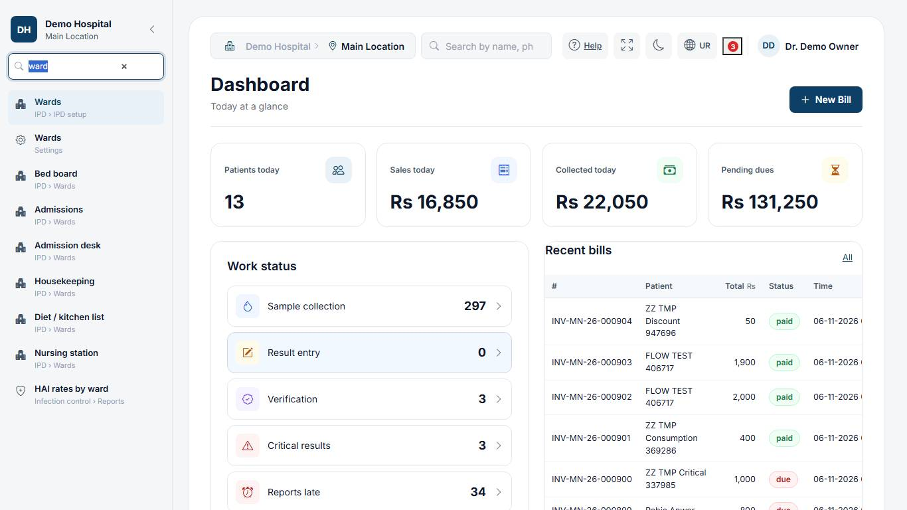
Management (MIS) dashboard
Management (MIS)Revenue, patients, turnaround, expenses and cash, compared with the previous period. Choose Today, Yesterday, Month to date, Year to date or Custom, and one location or all. There is a card for each module the hospital has (laboratory, OPD, IPD, radiology, pharmacy, HR, ER, OT, ICU, maternity, blood bank, dialysis and the rest), each as a table or a chart, with Open the report.
Daily summary: a short text of the day, ready to paste into WhatsApp (Copy text, Open WhatsApp). It is also e-mailed to the owners every morning at 08:00; switch it on and choose the e-mails here.
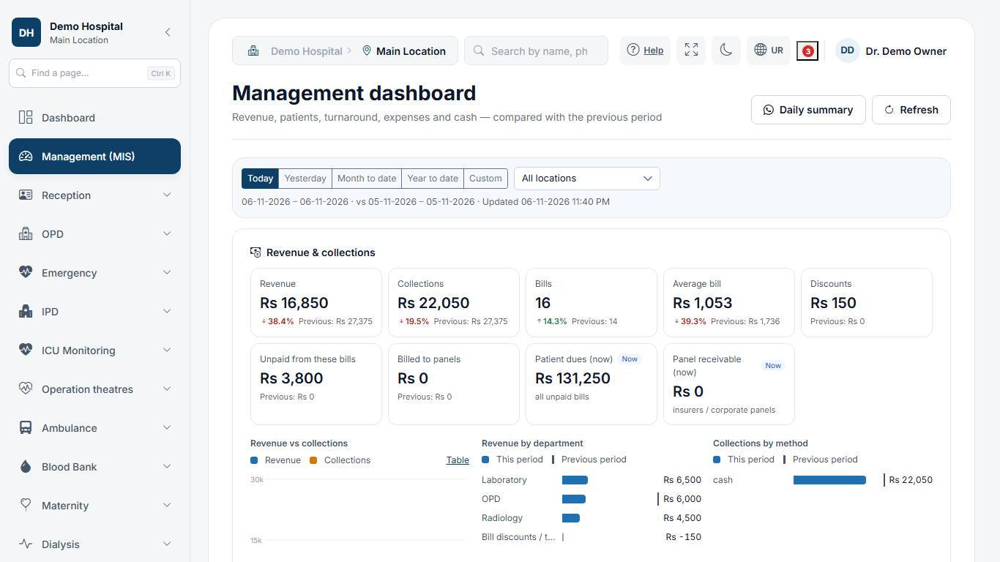
Pharmacy
PharmacyThe pharmacy has its own sale screen, bill numbers and stock, apart from the Lab Inventory. Pharmacists and cashiers work in the pharmacy portal.
Set up once
- Pharmacies & Stores: each pharmacy (OPD pharmacy, IPD pharmacy), the main store and the ward stores, who works in each, and its cash counter.
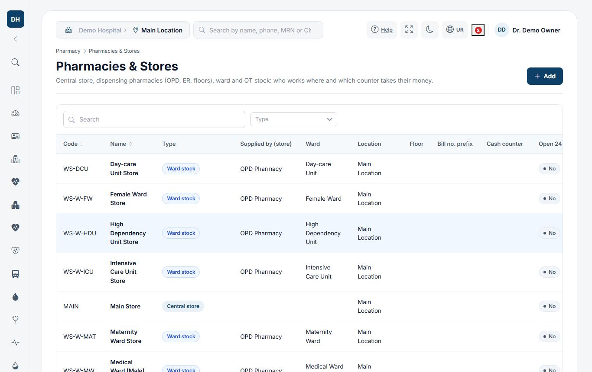
Step 1: Pharmacy › Pharmacies & Stores. - Medicines: name, generic, company, pack levels (for example tablet › strip › box) with the base unit, MRP, barcodes, par levels per store. Lists: Generic Products, Generics, Ingredients, Companies, ATC Classes, Dosage Forms, Routes, Units.
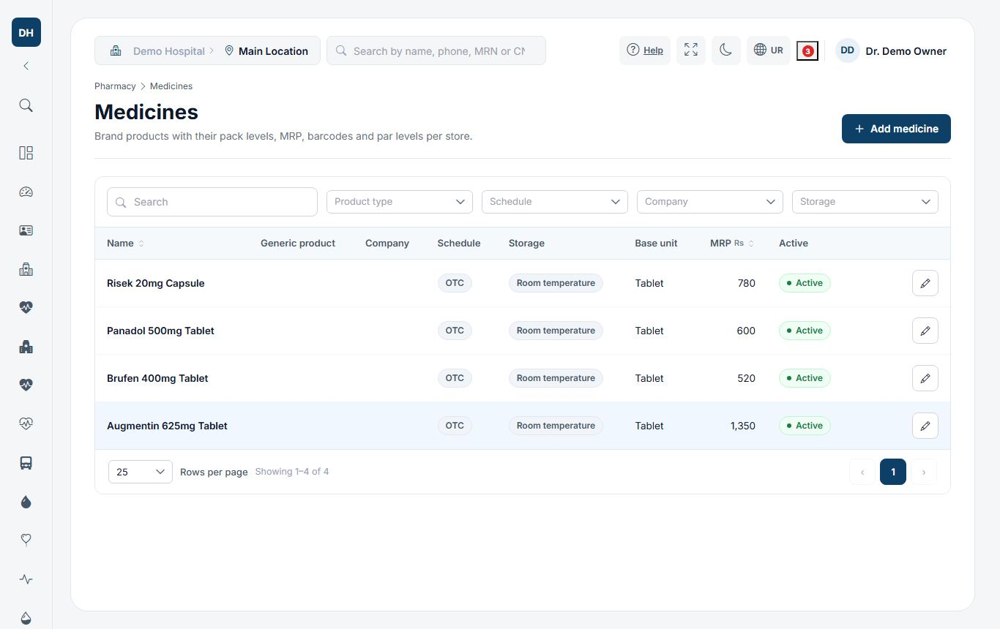
Step 2: Pharmacy › Medicines. - Pharmacy Settings: prices, expiry rules, prescriptions, first-expiry-first, scanner, receipt. For all locations or one.
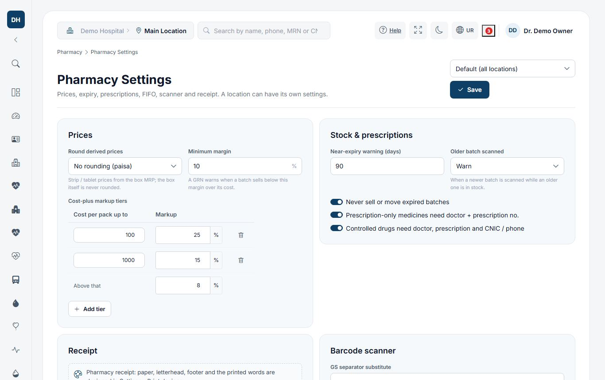
Step 3: Pharmacy Settings (all locations or one).
Daily work
| Screen | Use it to |
|---|---|
| Pharmacy Sale | The counter (own screen). F2 search, F4 patient, F8 cash, F9 card, F10 several ways, F6 park, F7 recall, Ctrl+R reprint. Money goes into the cashier's open register. |
| Sales / Sale Returns | Bills with batches, reprint (80 mm / A4), take back. |
| Controlled Drugs Register | Controlled medicines in and out. |
| Stock | On hand per store, at batch cost and moving average. |
| Batches & Recall | Every batch with expiry badges; recall view; block / unblock a batch in every store; labels. |
| Requisitions | Indents from wards and stores: new or suggested from par levels, submit, approve, issue, receive. |
| Transfers | Between stores: send (in transit), receive with shorts, call back. |
| Write-offs, Stock Count, Stock Ledger | Damaged / expired / lost stock by batch; count a store batch by batch and post the differences; every movement. |
| Bulk Price Change | A DRAP notice: pick medicines, the new MRP per pack and the date it starts. Future dates wait for the day. Price History keeps the old prices. |
| Purchasing | Purchase Orders, Goods Received (the distributor's bill at the door), Purchase Returns, Distributors, Distributor Payments. |
| Reports | Sales by day / medicine / cashier, stock valuation, expiry, reorder / low stock, fast & slow movers, margins, price changes, purchase register, distributor dues, requisitions & fill rate, transfers, controlled drugs. |
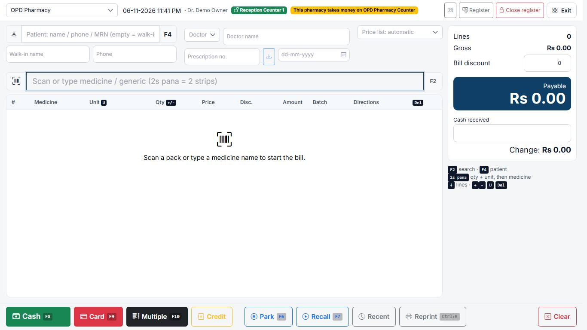
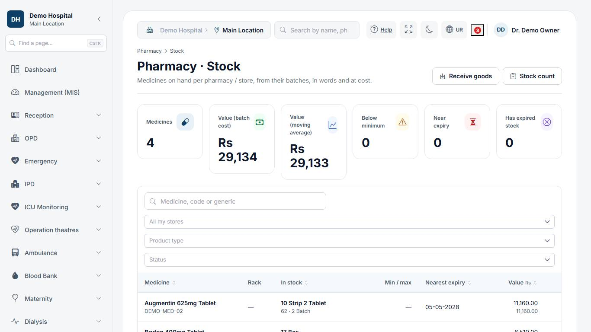
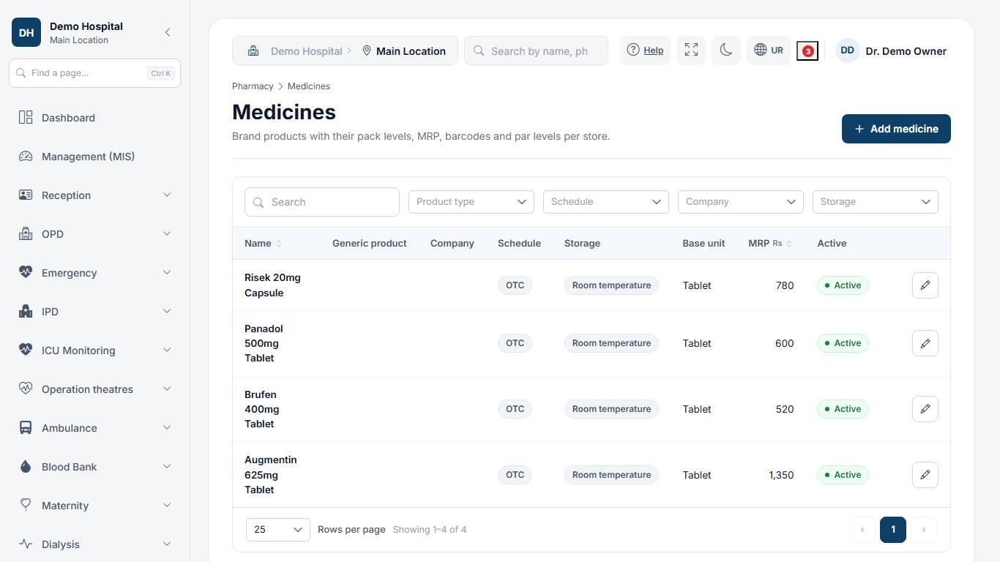
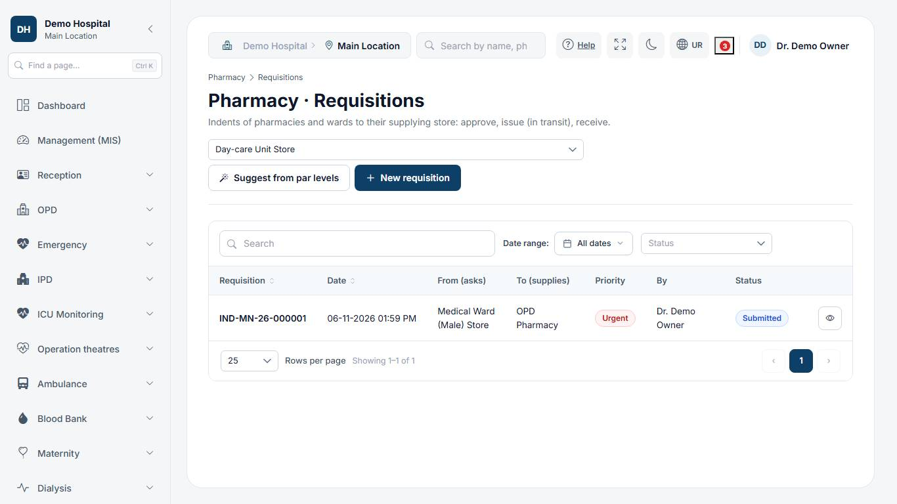
General Store
General StoreNon-medicine items: gloves, syringes, stationery, cleaning items. Lab reagents stay in Lab Inventory, medicines in the Pharmacy.
- 1. Department requisitionWard / department
New, submit (the nurse portal's Store requisition comes here too).
- 2. ApproveIn-charge
Approve all or part.
- 3. IssueStore keeper
Issues to departments, wards or admitted patients. A return can be taken from an issue.
- 4. Stock falls below reorderStore keeper
Reorder list › purchase requisition in Procurement.
Also: Stock (on hand, reorder levels, next expiry, value; the item card shows every movement), Transfers, Department returns, Write-offs, Stock counts, Stock ledger. Setup: Items, Categories, Units, Stores, Departments (cost centres), Reorder levels. Reports: department consumption, valuation, reorder list, expiry, issue register.
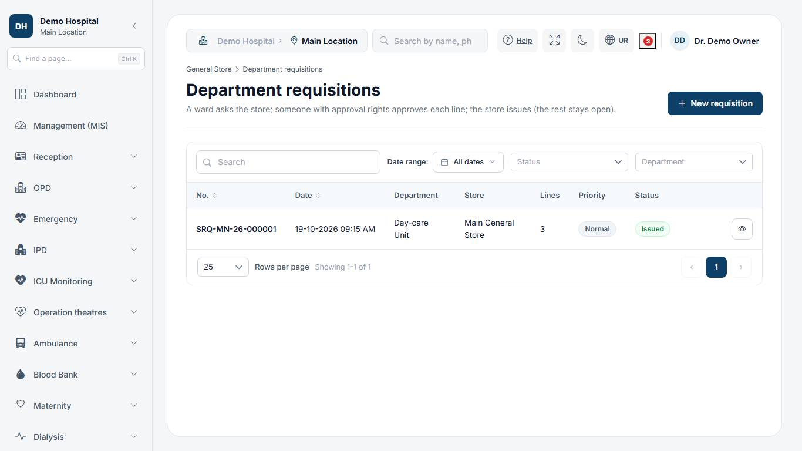
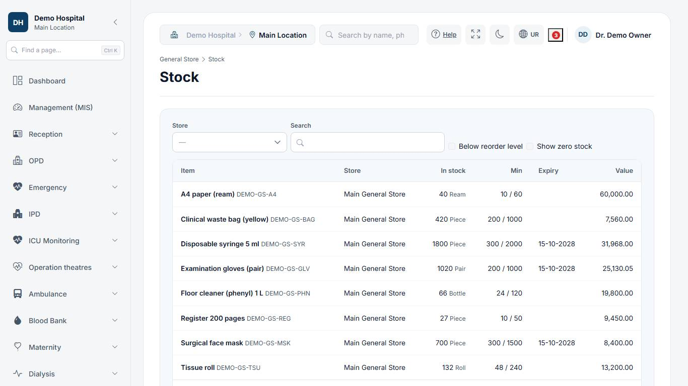
Procurement
ProcurementBuying for every module. The Lab Inventory and the Pharmacy open the same screens filtered to their own purchases.
- Purchase requisitions: draft, approvals by level, quotations compared, supplier chosen › PO.
- Purchase orders: direct or from a quotation; approve, send, receive in parts.
- Goods received (GRN) and Supplier bills: the lab and the pharmacy enter the GRN and the bill in one step; the General Store can take a GRN alone and match the bill later (order = GRN = bill). Differences wait for an override.
- Purchase returns (debit notes), Supplier payments, Suppliers.
- Setup: Approval levels, Procurement rules (how many quotations from which amount, match tolerances, PO terms). Reports: PO register, goods received not invoiced, supplier performance.
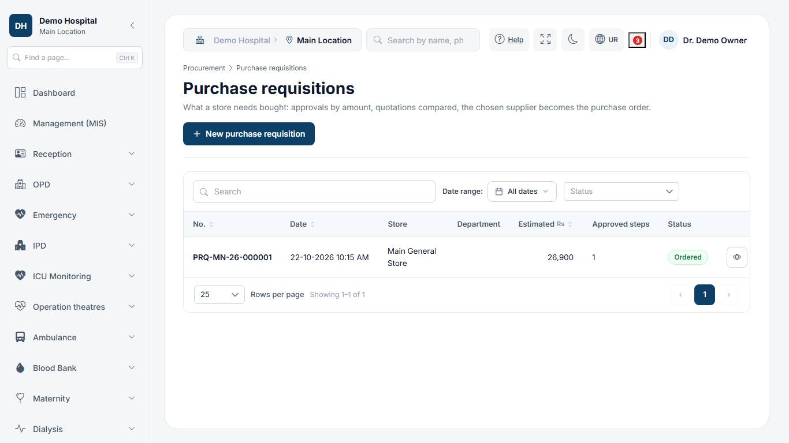
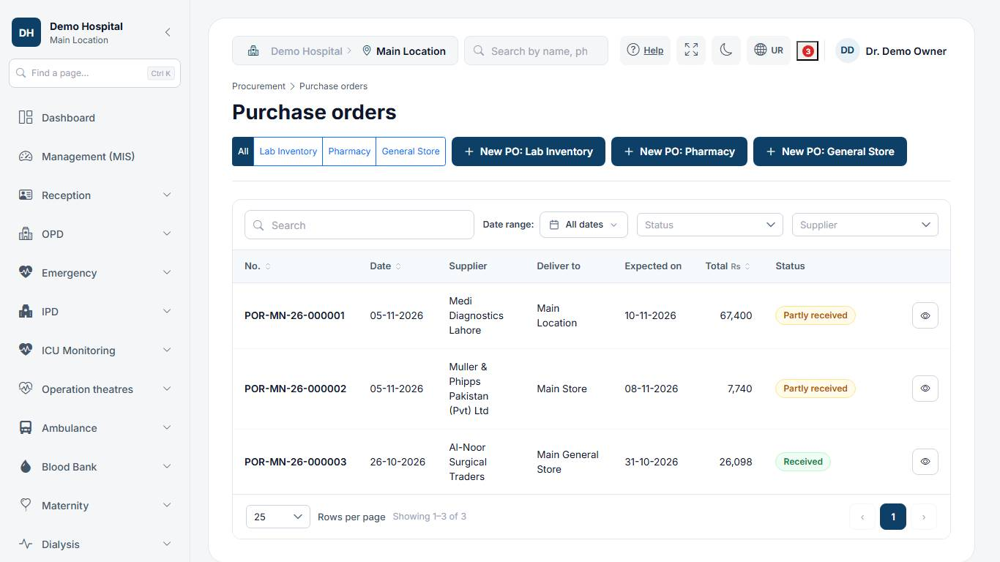
Biomedical
BiomedicalDashboard: devices down now, PM due / overdue, uptime %, calibrations due, contracts to renew. Equipment register with each device's history, calibration certificates and contracts. Breakdown complaints from the wards (also from the nurse portal) › a work order, or close with no fault. Work orders (PM work orders are made every morning; "Make due PMs" makes them now), PM schedules, Calibrations, AMC / CMC contracts. Reports: uptime, PM compliance, maintenance cost.
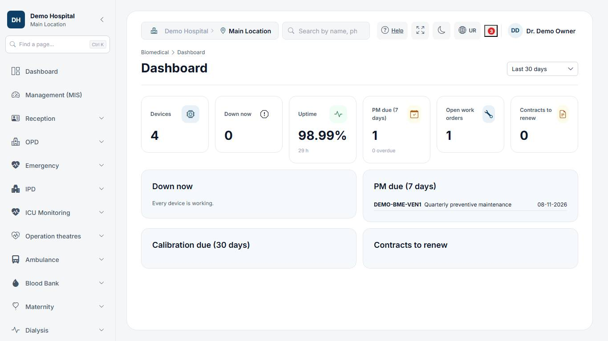
CSSD
CSSDTray board follows every tray round this loop. Steriliser cycles (results, late biological indicator, recall, pack labels), Sterile packs, Traceability (a pack label, tray, cycle or patient MRN shows the whole chain), Trays received, Packs issued, Recalls. Setup: instrument sets, trays, sterilisers, methods, CSSD rules (daily Bowie-Dick test, shelf life).
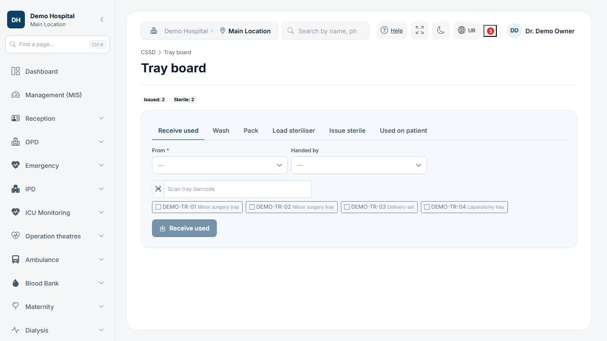
Linen & laundry
Linen & laundryLinen board: pieces of each type at the linen store, in every ward (against its par level) and at the laundry. Linen moves: receive new, issue to a ward, collect soiled, clean return of a laundry batch, condemn / loss. Setup: linen types and locations. Reports: stock vs par, laundry & losses.
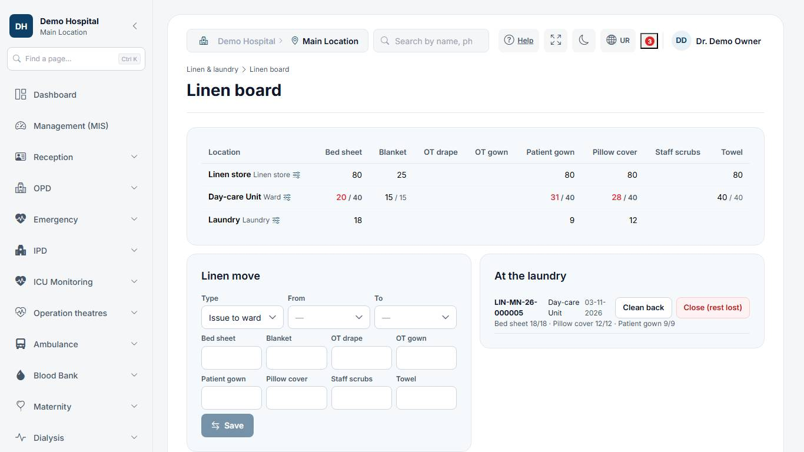
Pricing, packages and deposits
Billing › Pricing · Billing › Patient DepositsBills, receipts, refunds, shifts, the cash book and doctors' payouts are in the User Manual. The other Billing screens:
| Screen | Use it to |
|---|---|
| Chargemaster | Every service the hospital charges for (bed day, visit, procedure, service) with its price. |
| Price Lists | Other prices for a panel or company. |
| Packages / Bought packages | Fixed-price packages (for example a normal delivery), and the packages patients bought. |
| Offers & Discounts | Discount offers for a period. |
| Taxes | Tax rates on bills. |
| Patient Deposits | Advance money from a patient, used against later bills. |
| Share / commission rules, Doctor groups, Doctor payment models | How each doctor's share is worked out. |
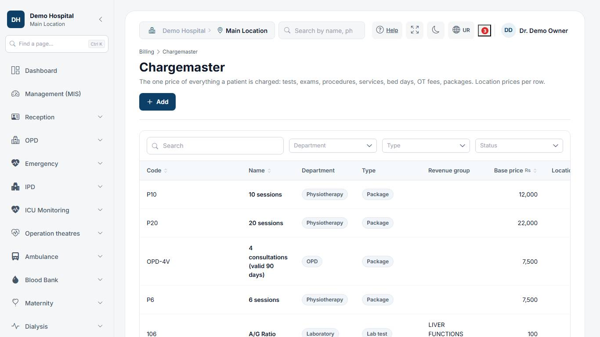
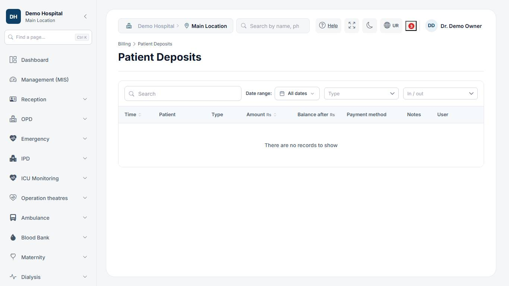
Messaging and WhatsApp
MessagingHow SMS, WhatsApp and e-mail leave the hospital, and a log of every message.
1. Link your WhatsApp (QR)
- Messaging › WhatsApp (QR) › click Link WhatsApp.
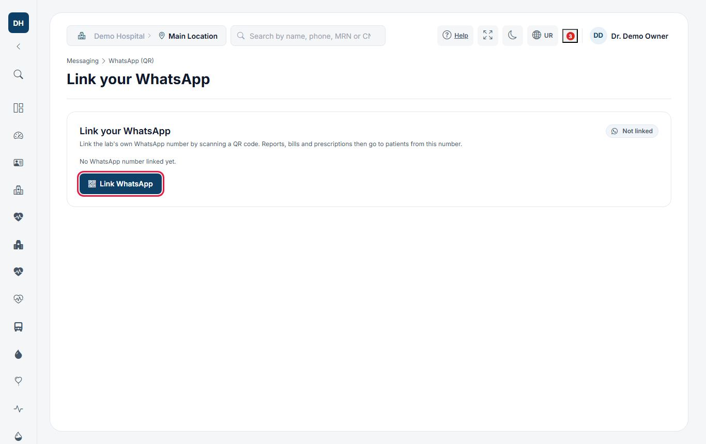
Step 1: Link WhatsApp. (The QR code and the Connected / Disconnected states of steps 2–4 need a real phone; they are not shown here.) - On the hospital's phone open WhatsApp › Linked devices › Link a device, and scan the code on the screen. The code refreshes by itself.
- It shows Connected: <number>. Send test message to check.
- If the phone is logged out or off for long it shows Disconnected: press Show QR again and scan. Until then messages go by SMS (when allowed) or wait.
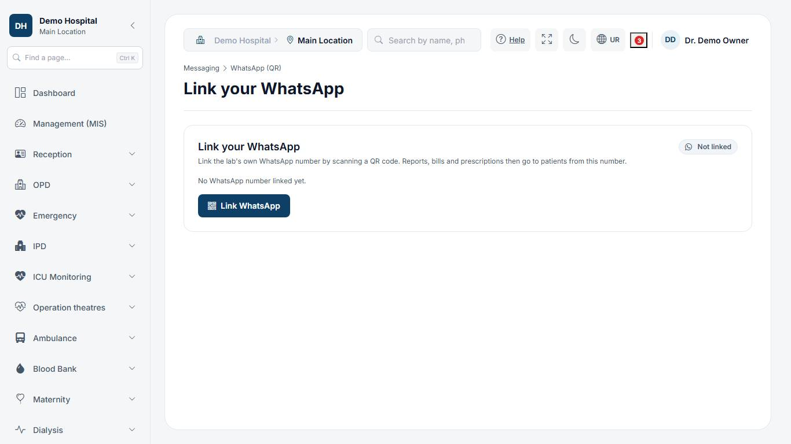
2. Gateways & options
Add gateway: one default gateway per channel (SMS, WhatsApp, e-mail), with its cost per message, and Test. Options: the order patient messages try (for example WhatsApp, then SMS), the default language, the name in messages, how documents go on WhatsApp (PDF, picture, or a text with a secure link) and what to do when the WhatsApp phone is disconnected.
3. Automatic messages
Switch each on in Options: Bill registered, Payment receipt, Sample collected, Home collection booked, Rider on the way, Report copy to the referring doctor, IPD discharge. "Report ready" is under Settings › Queue & TV. Critical values go to the doctor, never to the patient.
4. Message templates
The text of each message, per event, channel and language (English and Urdu), with placeholders like {patient}, {mrn}, {bill_no}, {amount}, {due}, {lab}, {report_link}, {date}, {rider}.
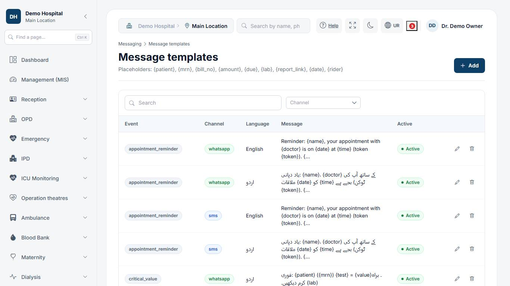
5. Delivery log
Every message of every module: Queued, Sent, Delivered, Failed (tried again by itself), Skipped (opted out), with tries and cost. Send again one message; Send queue now. Filter by status and channel.
6. Opt-outs and campaigns
- Opt-outs: numbers or e-mails that must get no messages (all channels or one, all messages or one kind), with a reason. Login codes and critical results still go.
- Campaigns: one message to many patients (health camp, vaccination drive): audience by gender, age, city, visit dates; Count patients, then Send. Opted-out patients are skipped.
"Send on WhatsApp" on a report, bill or prescription
The button makes the document from the hospital's own print design and sends it (as PDF, picture or link). It goes in a moment; see the Delivery log.
Patient portal
Settings › Patient portalPatients open their own reports, bills and prescriptions and book appointments on their phone. There is no password: they log in with a code sent to their mobile.
- The hospital's portal:
your-address/portal. Print the address on receipts. The patient types his mobile number (or MR number) and the code. Menus: Reports, Appointments, Bills, Prescriptions, Profile (family on the same mobile). It can be added to the phone's home screen. - The TibuLab patient app (
tibulab.com/my-reports): one app for every TibuLab lab and hospital the patient visited. It also has Security: who viewed my records, and the switch Share my records with other TibuLab hospitals.
Settings on this screen: Open a report only when its bill is paid, Patients may book / move / cancel OPD appointments, text on the login screen, whose name portal bookings are made in, what to share with the TibuLab patient app (reports, visits and appointments, prescriptions, bills), and the login code rules (how long a code is valid, wrong tries before a lock, days to stay logged in).
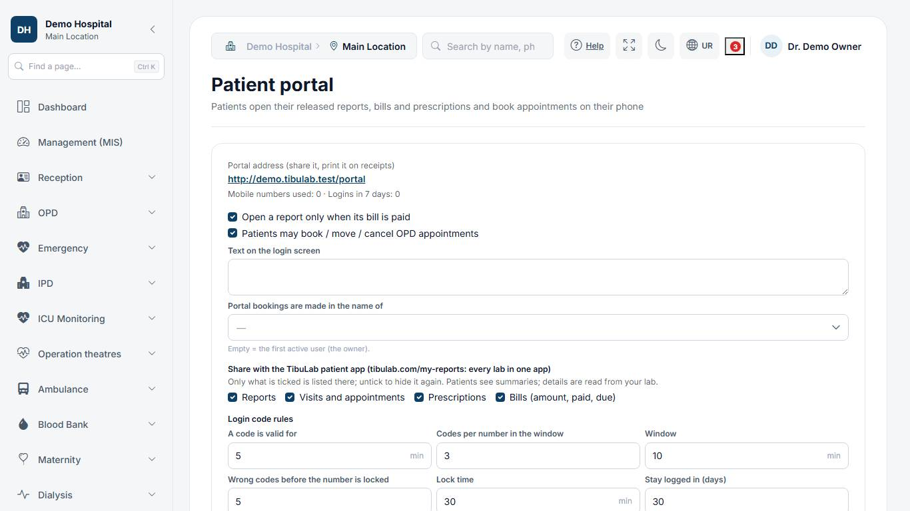
Settings: every screen
Settings| Screen | Use it to |
|---|---|
| Business | Hospital / lab name, phone, address, NTN, licence no., logo, header and footer for receipts, labels and reports. |
| Locations | Each branch or campus; open one to add its labs (per floor), pharmacies, radiology rooms and counters. |
| Users | Logins: name, email, phone, password, role (decides the portal), home location, discount limit, active. See Give a login / reset a password. |
| Roles & Permissions | What each role can do, and its discount limit. |
| Report Layout, Signatures | Letterhead, paper size, and the pathologist's / radiologist's signature. |
| Print designs | Every printed document of the switched-on modules, its designs per business, location, department, doctor or user, and the designer. |
| My print design | Your own design: a doctor's prescription, a user's lab report. |
| Numbering | Prefix and next number of bills, receipts… |
| SMS & WhatsApp | The message templates (same as Messaging › Message templates). |
| Patient titles, Patient relations | The lists used on the patient form (Mr, Mrs…; father, husband…). |
| Wards | Ward names for lab orders from the wards. |
| Devices & Licence | How this install runs (cloud, local server, desktop), the licence, the cloud link, what waits to sync, failed items, Sync now. See Cloud copy and sync. |
| TV screens | Doctor doors, waiting halls and the lab hall: Pair TV or Show on this PC's TV. See Queue and doctor TVs. |
| Queue & TV | Calls in English / Urdu, voice, pictures when the queue is quiet, and the "Report ready" message. |
| Subscription | Read only: plan, expiry and which modules this hospital has. |
| Integrations (FHIR / HL7) | Links to other systems (only when the plan has it). |
| Patient portal | Above. |
| Lookups | Countries, Provinces, Cities, Religions, Currencies. |
| Logs | Activity Log (who changed what), Recycle Bin (restore deleted items), Login History. |
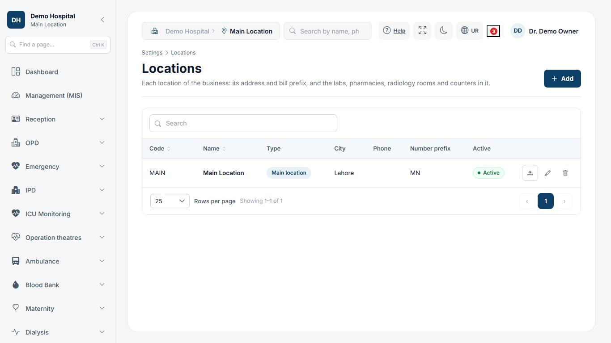
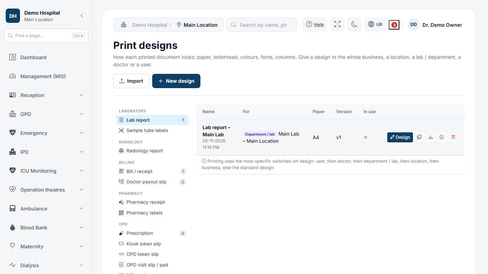
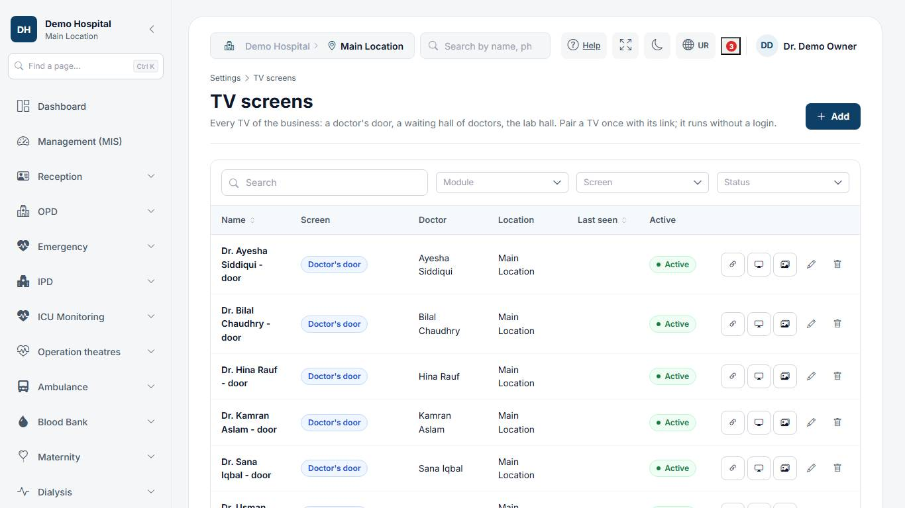
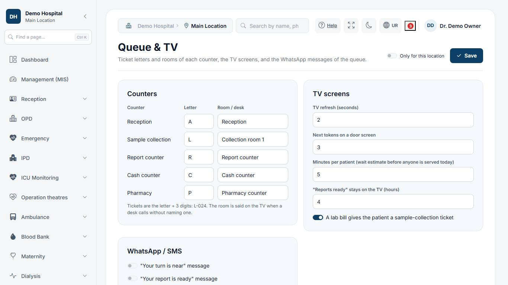
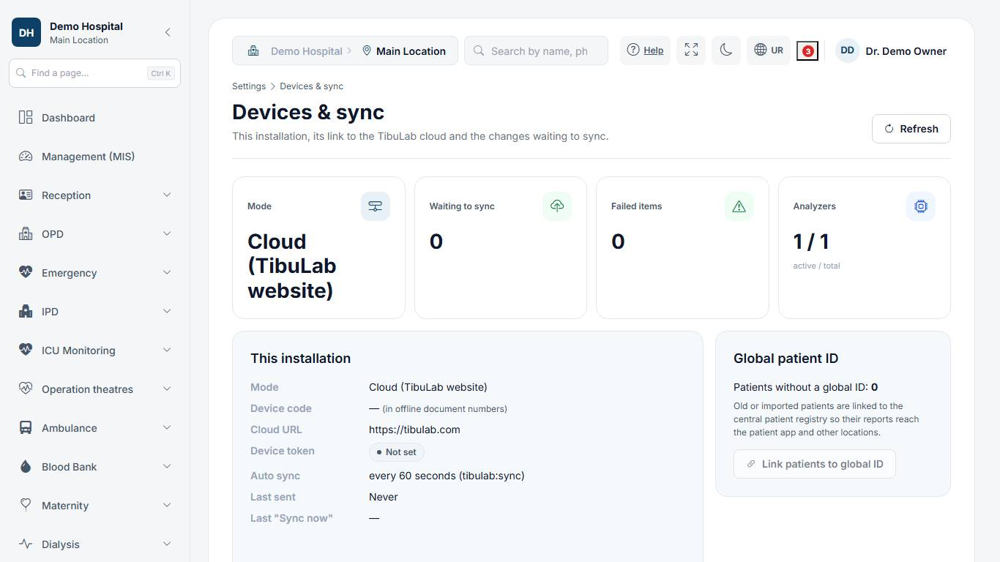
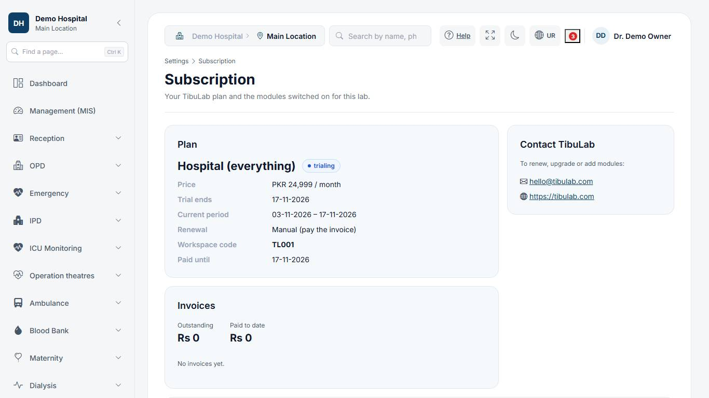
System health, downtime forms, kiosk
Admin- System health: disks, background workers, the scheduler, the Device Hub, backups (run now / preview), the message and FBR queues. See Backups.
- Downtime forms: a pack of blank paper forms (admission and others) to print when the system is down.
- Kiosk settings: walk-in self registration on a kiosk (on / off, texts, idle time).
- Patients › Registry notices: what TibuLab asked you to check ("the mobile may be wrong"). Correct patient or Checked, nothing to change.
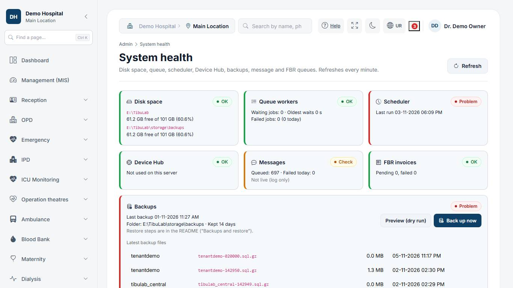
Central back office (TibuLab staff only)
tibulab.com/centralThis is not part of a hospital's TibuLab. It is the platform owner's back office, for TibuLab staff: pending registrations, labs & hospitals (tenants), sync and held entries, subscriptions, invoices, payment proofs, plans and features (modules), backups, WhatsApp devices, the patient registry (search people, duplicate reviews, wrong links, merge history), patient portal accounts and the OTP log. Hospitals never sign in here; they use their own address.
Page checked against TibuLab on 06-11-2026.